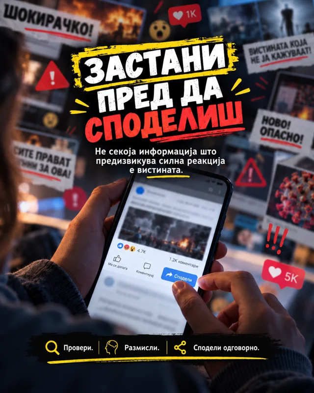
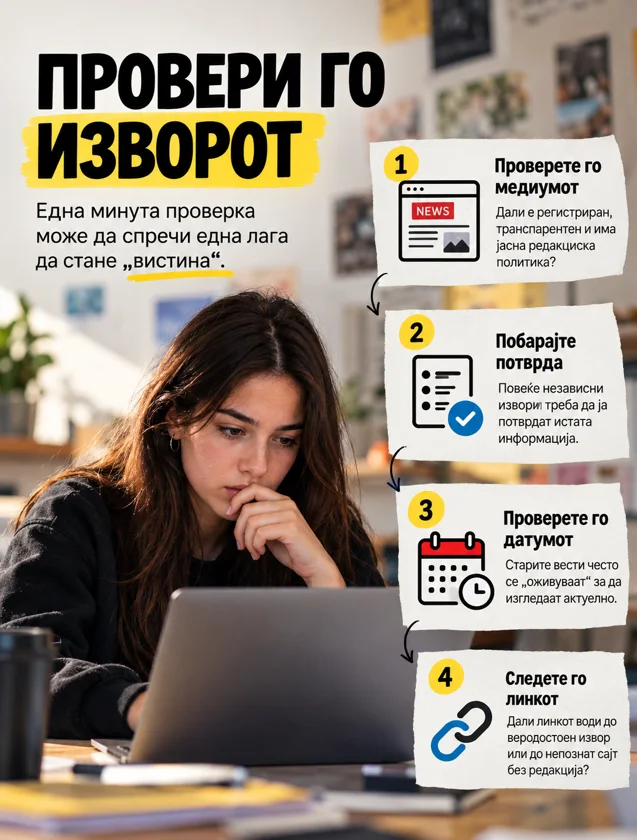
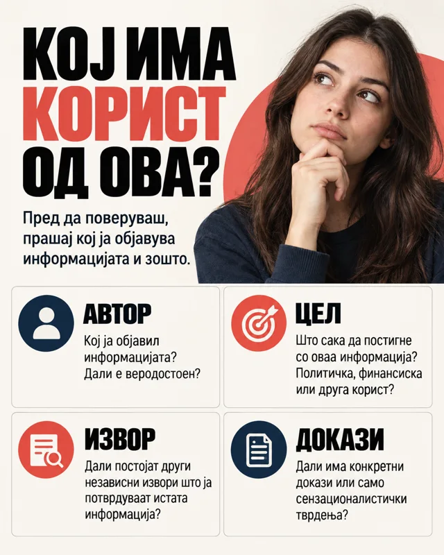
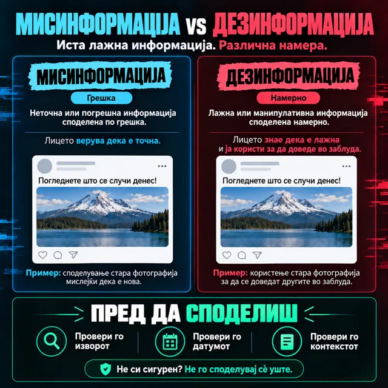
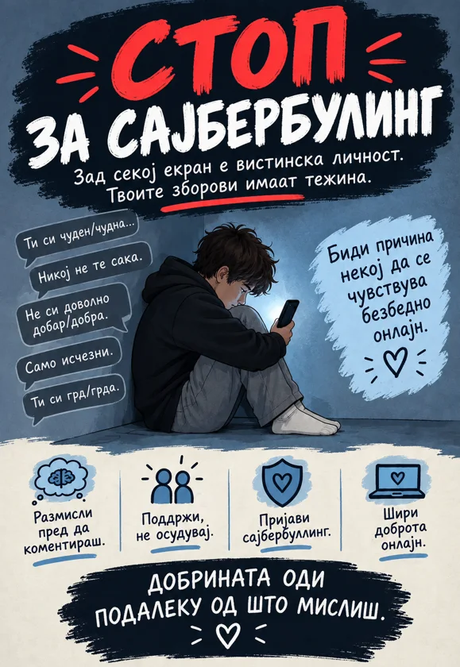

Пред да поверуваш.Пред да споделиш.
Научи да проверуваш информации, да разбираш AI и да ги заштитиш своите податоци. Сè на едно место, на твојот јазик.

Избери тема.
Читај по ред или отвори го поглавјето што ти треба.
Проверка на информации
Популарно ≠ проверено.
Проверка на информации значи да се утврдат изворот, доказите и контекстот на едно тврдење, пред тоа да се прифати или сподели како факт.
ИзворАвтор и медиум што го објавуваат.
ДоказиДокументи, податоци и проверливи извори.
КонтекстДатум, место и целосна содржина.
Мисинформација
Неточна информација што се споделува без намера да се измами.
Дезинформација
Лажна или манипулативна информација што намерно се создава или споделува за да доведе во заблуда.
Од една објава не можеш секогаш да ја утврдиш намерата. Прво провери дали тврдењето е точно; не претпоставувај зошто некој го споделил.
Пет чекори пред да поверуваш или споделиш
- 1
Застани
Содржина што те плаши, те лути или бара веднаш да ја споделиш заслужува проверка. Големиот број лајкови не е доказ дека е точна.
- 2
Провери го изворот
Отвори ја оригиналната објава. Побарај автор, име на медиум и докази за тврдењето. Провери ја веб-адресата: лажни страници можат да имитираат познати медиуми.
- 3
Провери ги датумот и контекстот
Прочитај повеќе од насловот. Стара фотографија, исечено видео или туѓ цитат може да се претстави како нов настан. Провери кога и каде настанала содржината.
- 4
Побарај независна потврда
Провери дали други веродостојни извори го потврдуваат тврдењето. Повеќе профили што ја копираат истата објава не се независна потврда. Кога е можно, најди го оригиналниот документ или изјавата.
- 5
Сподели одговорно
Ако не можеш да потврдиш, не споделувај како факт. Ако веќе си споделил неточна информација, исправи ја и кажи што било погрешно.
Не си сигурен? Не споделувај сè уште.
Алгоритми и избор на содржина
Алгоритмот избира. Ти проверуваш.
Алгоритмите се системи што одбираат и подредуваат содржини. Во социјалните мрежи, тие влијаат врз тоа кои објави, видеа и реклами се прикажуваат во feed-от.
Твои реакции→Избор на алгоритмот→Следна содржина
Ова е поедноставен приказ. Препораките можат да зависат и од други сигнали.
Препораките можат да ги користат твоите гледања, пребарувања, лајкови и други реакции за да одберат што ќе видиш следно. Тој избор не е потврда за точноста на содржината.
Побарај друг поглед
За важна тема, излези од feed-от и отвори повеќе веродостојни извори.
Одбери што следиш
Прегледај ги профилите што ги следиш и користи „Не ме интересира“ кога опцијата е достапна.
Забележи ја навиката
Одреди кога ќе ја затвориш апликацијата, наместо следното видео да ја носи таа одлука.
AI и deepfake содржини
Реалистично ≠ вистинито.
AI може да создава и менува текст, слики, видео и звук. Реалистичниот изглед или познатиот глас не се доволен доказ за автентичност.
- Побарај ја оригиналната снимка, објава или изјава.
- Провери дали веродостојни извори го потврдуваат настанот.
- Чуден изглед или звук може да биде повод за проверка, но сам по себе не е доказ за манипулација.
Лични податоци и безбедност
Твоите податоци. Твоја заштита.
Phishing е измама со пораки или страници што се претставуваат како доверливи за да добијат лозинка, код за најава или други податоци. Чести знаци се барање за итна реакција, неочекувана награда и линк до непозната или имитирана адреса. И познат профил може да биде преземен.
- Не внесувај лозинка или код за најава преку линк од сомнителна порака.
- Провери со лицето преку друг, веќе познат контакт.
- Ако треба да провериш нешто на платформата, отвори ја апликацијата или официјалната страница директно.
Три работи што можеш да ги средиш денес
- Долга и различна лозинка за секој профил.
- Вклучена двофакторска автентикација (2FA), кога е достапна.
- Проверени дозволи за локација, контакти, камера и микрофон.
Сајбербулинг и поддршка
Зачувај доказ. Побарај поддршка.
Сајбербулинг е повторено вознемирување преку дигитални платформи со цел некого да се исплаши, понижи или повреди. Може да вклучува навреди, закани, ширење лаги, објавување понижувачки фотографии или лажно претставување. И еден сериозен инцидент заслужува пријавување и поддршка.
Не возвраќај со навреди
Не ја продолжувај расправијата и не ја проследувај навредливата содржина.
Зачувај докази
Зачувај пораки, линкови и снимки од екранот за да можеш да објасниш што се случило.
Блокирај и пријави
Користи ги опциите за блокирање и пријавување на платформата.
Кажи на возрасен на кој му веруваш
Разговарај со родител, наставник или училишен психолог. Ако се чувствуваш загрозено, побарај помош веднаш.
Создавање одговорна содржина
Јасна порака. Проверен извор.
Одговорната дигитална содржина има јасна порака, проверени тврдења и почит кон луѓето што ги прикажува. Постер, објава или кратко видео треба да му помогне на читателот да разбере нешто или да преземе конкретен чекор.
Одбери една порака
Проверка пред споделување, препознавање намерна манипулација или поддршка при сајбербулинг.
Направи постер, објава или кратко видео
Стави јасен наслов, слика што ја објаснува пораката, проверен факт со извор и конкретен совет. Означи содржина создадена со AI.
Објасни и сподели
Покажи го на соучениците: зошто таа порака и како ја провери? За училишно пано или профил, договори се со наставник.
Постери за училиште
Знаењето заслужува да се сподели.
Пет постери со јасни пораки за проверка на информации и одговорно однесување. Отвори ги или преземи ги за училишното пано.


Провери го изворот
Преземи PNG

Кој има корист од ова?
Преземи PNG

Мисинформација и дезинформација
Преземи PNG
